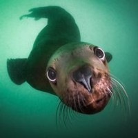
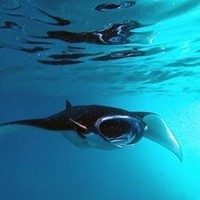
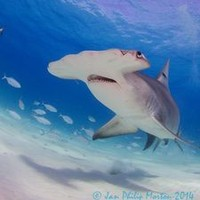

I've been working in publishing and design for print over the last 20 years and have now decided to further develop my skills in web and app development with the help of the guys at Le Wagon.
Visit Le Wagon|  |
GalapagosGalapqgos with its plankton rich water and stong currents, attracts a variety of creatures, from sea lions and penguins to very large pellagics including pregnant whale sharks up to 20 metres long. |
|  |
MaldivesThe Maldives are one of the best places in the world to see mantas in large numbers. Mantas love strong currents and can often be found getting cleans in the channels between the islands. |
|  |
Cocos IslandCocos lies about 300 kilimetres off the cost of Ecuador. The uninhabited island is a marine protected area where hammerheads come to mate and give birther. It is common to see hammerheads in schools of up to 400. Mind blowing! |
This page has been coded during the FullStack program @LeWagon. That was probably the best experience of my entire life.